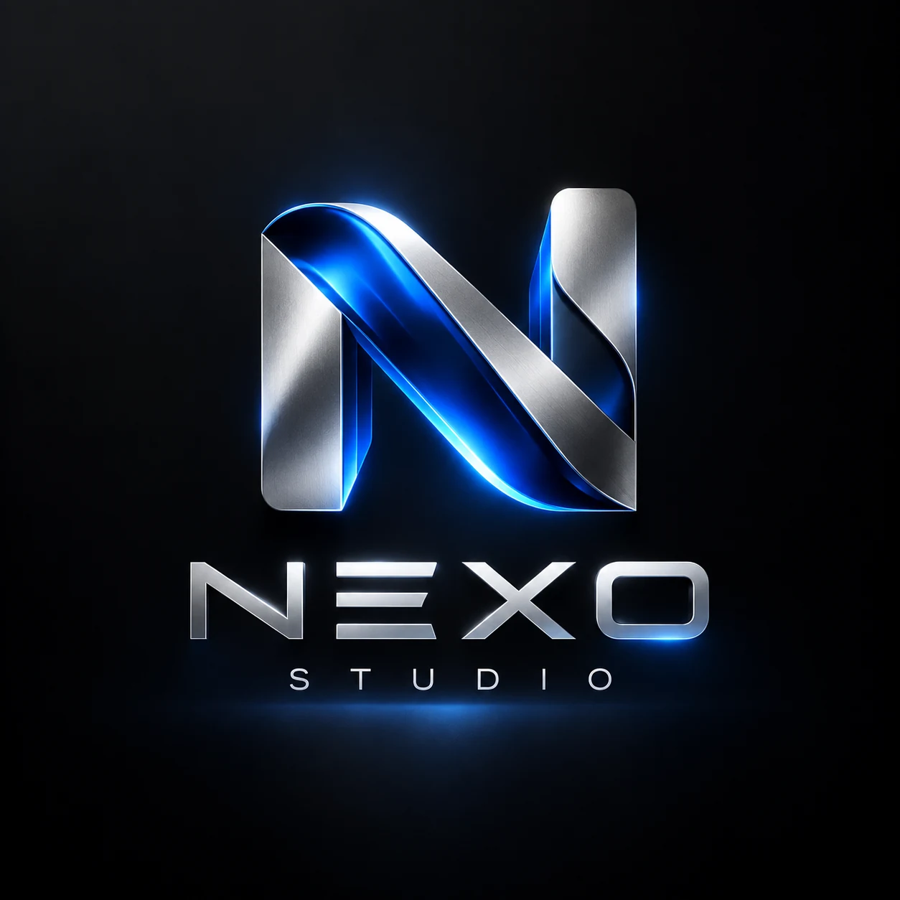

Atenção sem direção
Seu conteúdo é visto, mas falta um próximo passo claro para quem se interessa.
Conteúdo, social, web e conversão trabalhando como um único sistema. Sua marca com presença, direção e um caminho claro até o cliente.

CONEXÃO É O NOSSO PONTO DE PARTIDA.NEXO / CREATIVE & DIGITALUm bom vídeo abre a porta. Mas a experiência precisa continuar nas redes, no site e na conversa. É nessa conexão que a Nexo trabalha.
Seu conteúdo é visto, mas falta um próximo passo claro para quem se interessa.
Cada canal conta uma história diferente. Sua marca precisa ser reconhecida em todos eles.
A pessoa chega ao contato, mas a conversa se perde entre respostas e retornos.
Cada frente prepara a próxima. E o que aprendemos com seus clientes volta para melhorar toda a jornada.
Edição e motion design dão ritmo à sua mensagem. Os vídeos entram no planejamento de conteúdo e levam o público ao próximo passo.
Dados mostram o caminho. O CRM organiza os contatos e seus próximos passos. As dúvidas das conversas viram novas pautas; os números orientam os ajustes.
Um projeto pontual ou uma parceria contínua. Começamos pelo que sua marca precisa agora e conectamos as outras frentes quando fizer sentido.
Vídeos com narrativa, ritmo e acabamento para apresentar sua marca e comunicar sua oferta.
Planejamento e comunicação consistentes para aproximar sua marca das pessoas certas.
Sites que apresentam sua empresa com clareza e conduzem o visitante até o contato.
Atendimento individual no WhatsApp, com organização para acompanhar cada oportunidade.
Uma boa ideia chama atenção.
Objetivo, escopo e prioridades alinhados desde o começo. Cada entrega tem uma função dentro da jornada da sua marca.
Entendemos seu negócio, sua presença atual e o que você quer construir.
Definimos a estratégia, as frentes envolvidas, as entregas e o cronograma.
Criamos, apresentamos e refinamos, com pontos de aprovação combinados.
Na parceria mensal, acompanhamos os indicadores e ajustamos os próximos passos.
Os serviços podem ser contratados individualmente ou combinados em uma parceria mensal. O investimento é definido conforme o escopo.
Para organizar a comunicação e manter sua marca presente com conteúdo consistente.
Para receber melhor quem se interessa e dar continuidade às oportunidades de negócio.
Para conectar conteúdo, presença digital e atendimento em uma mesma direção.
Entregas, quantidades, revisões e prazos definidos na proposta. Projetos de implantação têm escopo próprio.
Você pode começar por um serviço individual ou combinar frentes. A primeira conversa ajuda a definir o que faz sentido para o momento da sua empresa.
Definimos um escopo de trabalho recorrente, com entregas, quantidades, calendário e pontos de aprovação. As frentes atuam de forma coordenada, conforme a proposta.
Depende das frentes envolvidas, do volume de entregas e da complexidade do projeto. Depois de entender sua necessidade, enviamos uma proposta com valores e condições claros.
É a conversa individual com quem demonstra interesse na sua empresa. Envolve entender a necessidade, apresentar a oferta, acompanhar o contato e organizar as próximas ações.
Conforme o escopo e o acesso aos canais, acompanhamos alcance, acessos, contatos e etapas de atendimento. O CRM registra as oportunidades e os retornos. Esses dados ajudam a identificar o que pode ser melhorado.
Sim. O trabalho parte da identidade da sua marca e mantém uma linguagem consistente entre conteúdo, redes e site.
O formato de pagamento, as rodadas de ajustes e as condições da parceria são definidos na proposta e formalizados em contrato antes do início do trabalho.
Sua empresa fornece as fotos, os textos e as informações do negócio. Nós transformamos esse material em conteúdo. Necessidades de captação presencial são alinhadas na proposta.
Não fazemos gestão de tráfego. O impulsionamento de publicações pode ser alinhado separadamente, com verba disponibilizada pela sua empresa.
O site é seu, com acesso aos arquivos. O atendimento e o desenvolvimento dos projetos podem acontecer de forma remota, inclusive para empresas de outras cidades.
Conte o momento da sua marca e o que você quer alcançar. A gente encontra o ponto de partida.
+55 (11) 93359-6263PREFERE IR DIRETO? FALE PELO WHATSAPP.